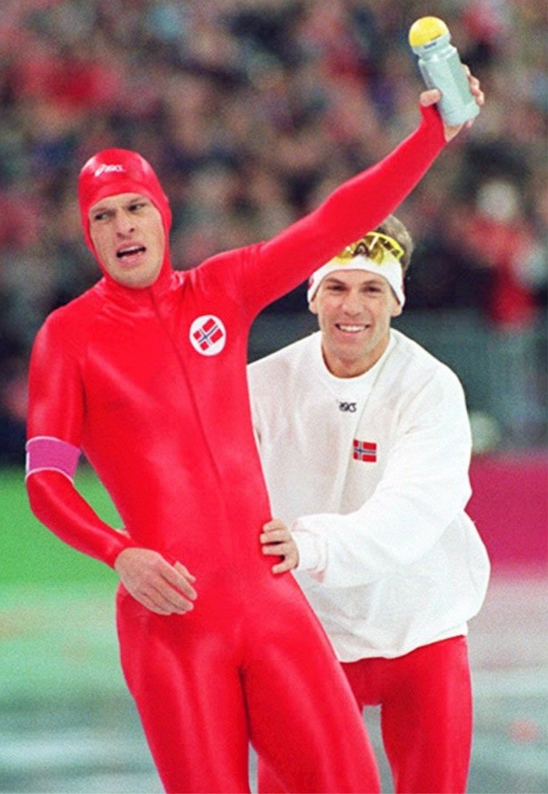

Jeg går på skøyter, det har jeg gjort siden jeg var 18 måneder gammel
Vi sykler om sommeren og går på rulleskøyter
Jeg går i Jenter 13 også kjent som jenter junior c
Hvordan går man på skøyter og hva penis trenger man?
Først så trenger du skøyter og varme klær selfølgelig
Så trenger du en skøytebane å gå på
Du trenger litt penger og du trenger godt humør
Jeg har gått på skøyter ganske lenge så jeg har trent mye gjennom livet mitt
Det er en litt rar inndeling av klassene man går i
Hvis du er født før Juli så er du garantert inn i din alders klasse, men er du født akkurat etter kommer du med de som er yngre enn deg, det kommer ann på når i Juli du er født
Her ser vi en av Norges beste skøyteløper Sverre Lunde Pedersen sette norges rekord på 5000 meter i 2019

Her ser vi et bilde av Johann Olav Koss under OL i 1994
Johann Olav Koss var en av Norges beste skøyteløper på 90-tallet
Han vant har 3 OL gull, han vant disse gullene i tillegg til at han satte verdensrekorder